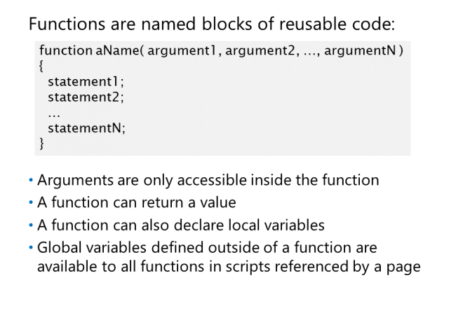
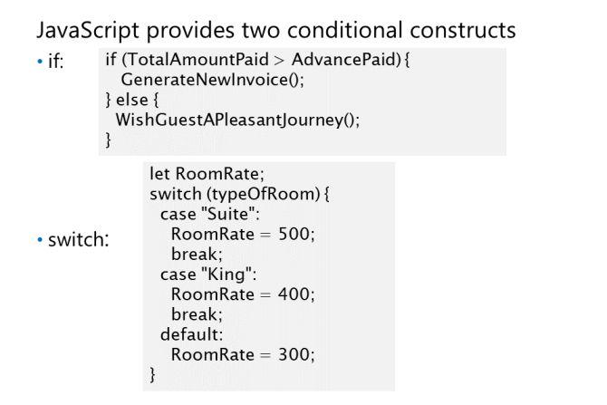
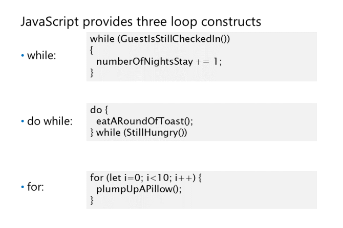

Przykład z returnem:
Instrukcje warunkowe

Pętle

while ocenia warunek logiczny,
a następnie uruchamia towarzyszący bloku
kod. Dopoki przykladowo funkcja w warunku coś zwraca to się wykonuje.
break - przerywa petle
for (let person of array) - foreach